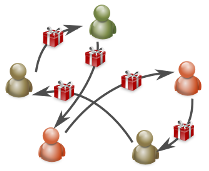

Entre amis ou en famille, voilà une manière originale de s'offrir des cadeaux.
Vous recevrez un cadeau de la part d'un proche, mais vous savez pas encore de la part de qui. Nous vous dirons par contre à qui vous devez offrir le vôtre.
Cadeaux entre nous organise la répartition des cadeaux via un tirage aléatoire et s'assure que tous les membres du groupe sont comblés.
Déjà 5256 événements ont été organisés, créez le vôtre maintenant :
Malheureusement, le site est fermé jusqu'aux fêtes de fin d'années 2014.
Il reviendra dans une nouvelle version plus simple à utiliser, avec de nouvelles fonctionnalités et moins couteuse pour ses créateurs.
Faites nous part de votre intérêt et vos idées sur cette page dédiée forum
De quoi s'agit-il exactement ?
Cadeaux entre nous vous permet d’organiser des distributions de cadeaux à l’aveugle. Un tirage au sort désigne à qui chacun doit offrir un cadeau au sein d’une famille, d’un groupe d’amis ou encore d’une équipe de travail.
Tout le monde reçoit le même nombre de cadeaux, on ne sait juste pas de la part de qui.
La personne qui crée le tirage saisit le nombre de cadeaux à offrir par personne ainsi que le nom et l’adresse électronique de chaque participant. Les participants reçoivent alors une invitation à remplir leur part du contrat en tirant au sort les noms de leur(s) cible(s).
Pour ne pas perdre les vieilles habitudes, le tirage au sort se fait en choisissant un petit bout de papier sur lequel est inscrit de nom de l’heureux élu que vous serez le seul à connaître.
Faites passer le mot, partagez cette page :